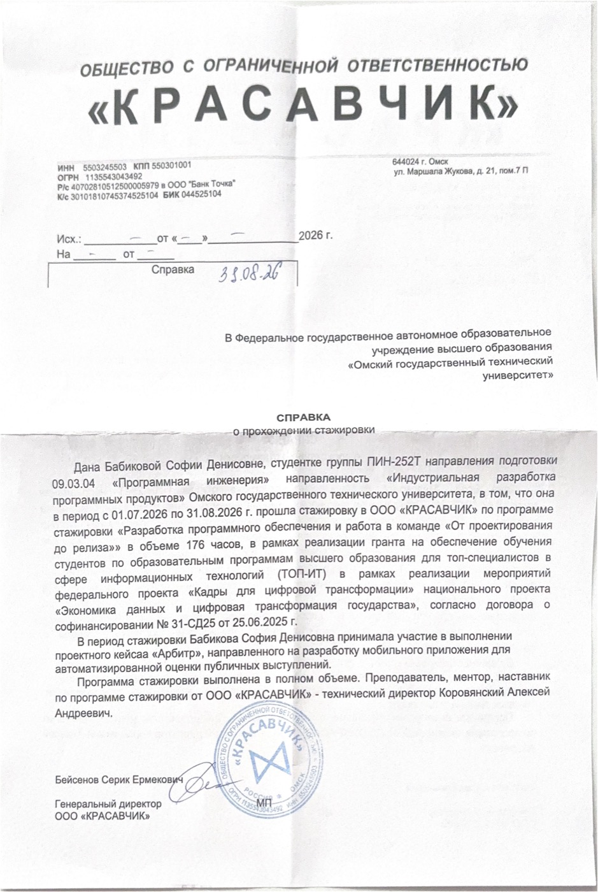
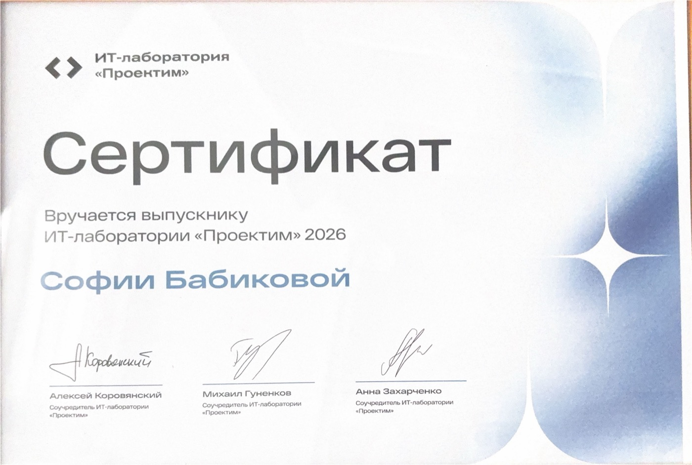
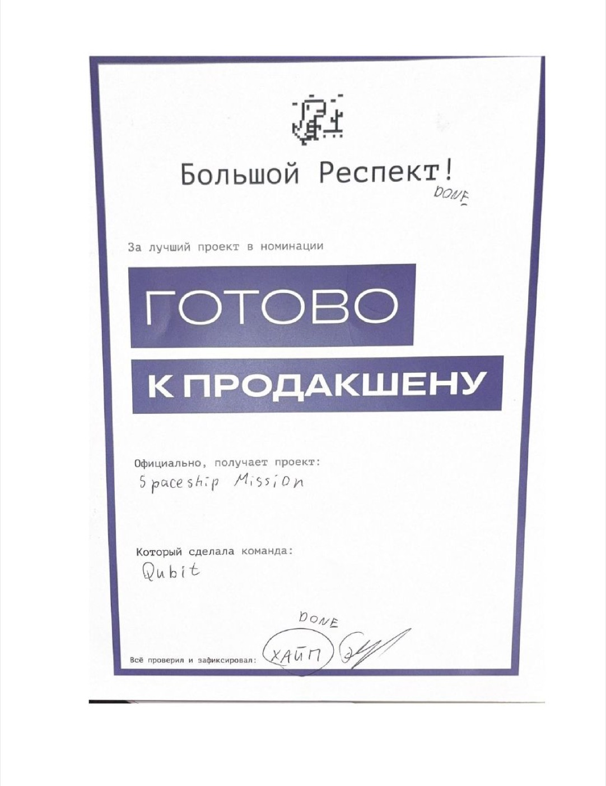
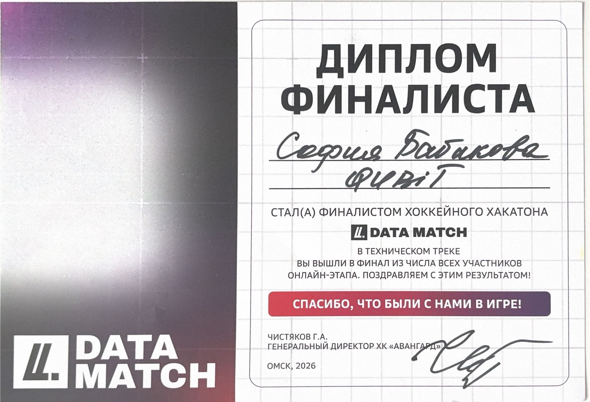
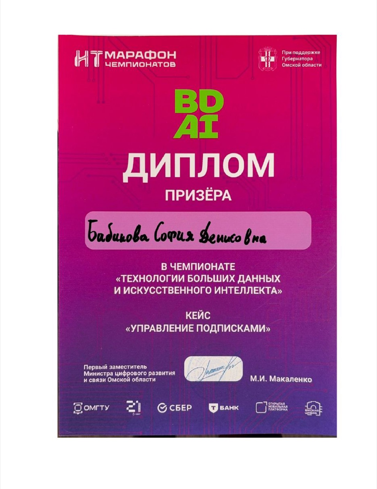
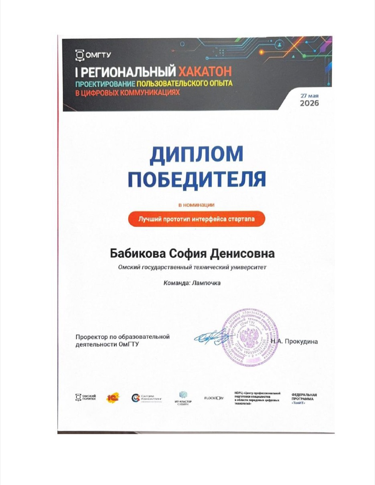
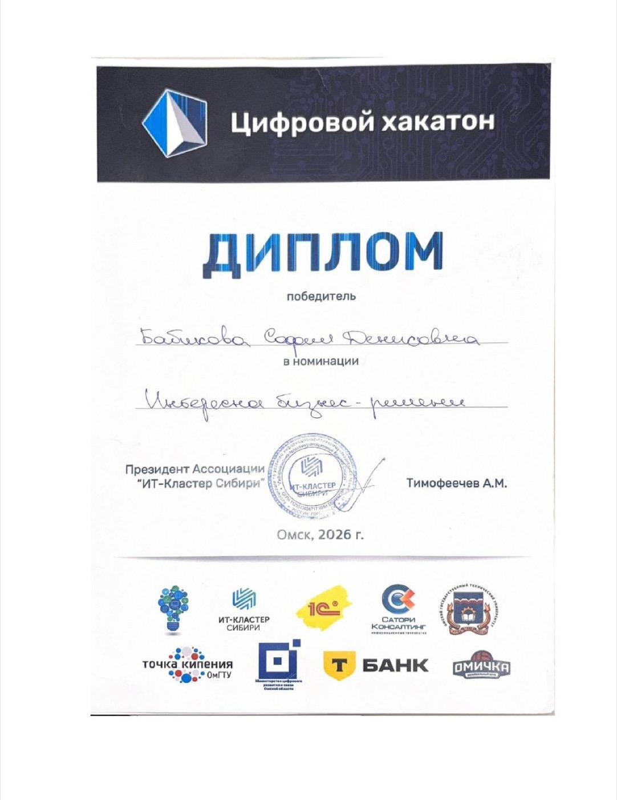
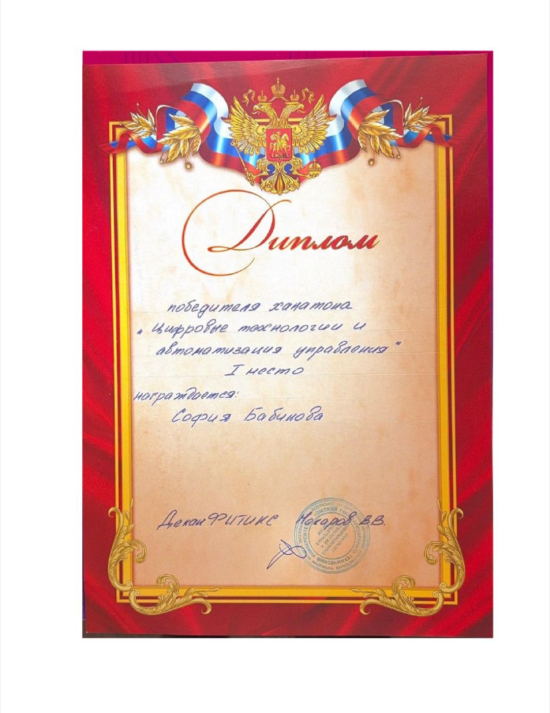
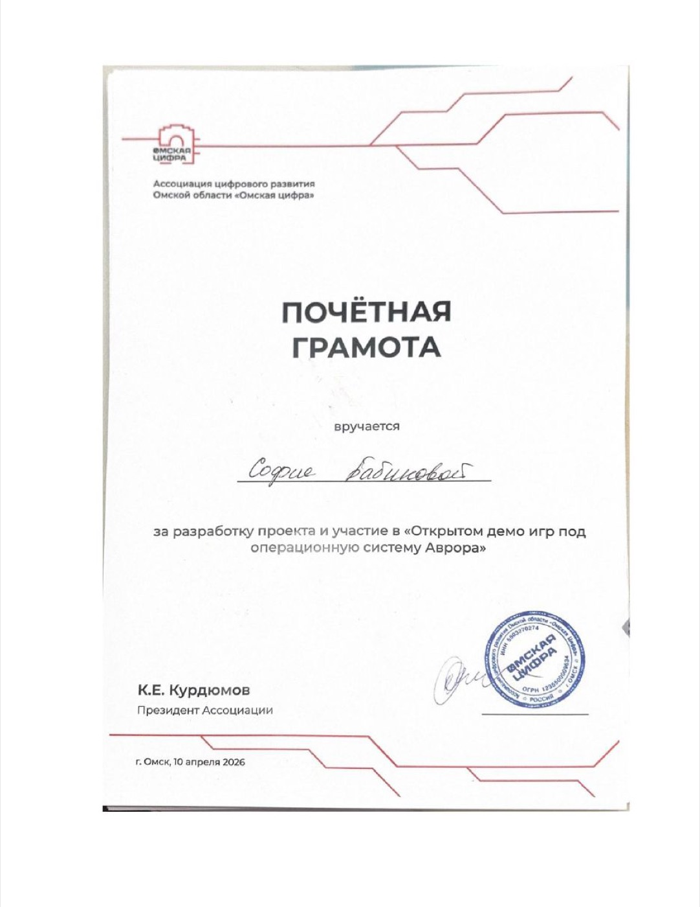
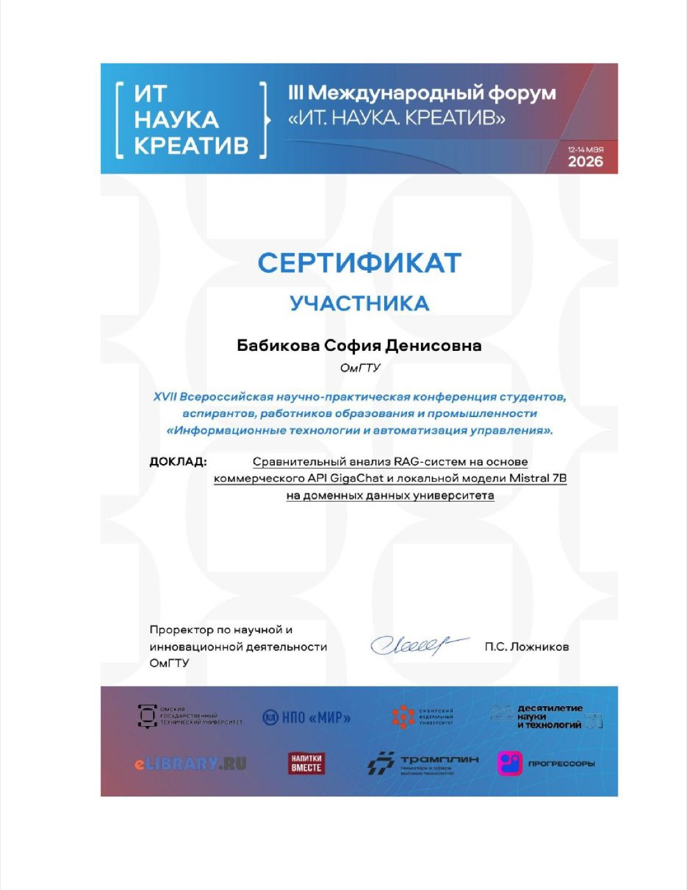

AI-инженер · Full-stack разработчик
Студентка ОмГТУ, «Программная инженерия» — «Индустриальная разработка программных продуктов», Омск.
Делаю продукты от идеи до релиза: веб, мобильные приложения, RAG-системы на LLM. Учусь на «отлично», получаю повышенную стипендию. За 2026 год — 4 победы на хакатонах, доклад на всероссийской конференции.
Программа «Разработка ПО и работа в команде: от проектирования до релиза». Участвовала в кейсе «Арбитр» — мобильное приложение для автоматической оценки публичных выступлений.

Справка о стажировкеML-инженер на проекте «Арбитр» — мобильное приложение для автоматической оценки публичных выступлений.
О проекте
Что я сделала на проекте

Сертификат выпускникаКоманда Qubit (2 человека): своя игра Spaceship Mission. На демо-дне — номинация «Готово к продакшену» и приз за лучший проект по версии Студенческой IT-лаборатории.
Spaceship Mission — мобильный 2D point-and-click квест под ОС Аврора. Корабль в критическом состоянии: игрок восстанавливает его по крупицам, решая головоломки в 4 локациях, и в финале воссоединяется с экипажем.
Презентация игры · открыть PDF

Диплом «Готово к продакшену»Веб-сервис для соревнований по сборке кубика Рубика. Игрок собирает кубик перед веб-камерой, браузер распознаёт грани и состояние кубика, ловит старт и стоп по рукам — так компьютерное зрение заменяет судью. Видео не уходит с устройства, на сервер отправляется только результат.
Окружной этап всероссийской серии хакатонов федерального проекта «Кадры для космоса» (6 этапов по России, финал в Москве, призовой фонд 7,2 млн ₽). Задачи космической отрасли. Команда заняла 5 место.
Проект: HydroWatch Амур — сервис оперативного мониторинга паводков на Амуре по спутниковым снимкам Sentinel-1 (радар) и Sentinel-2 (оптика). Команда: я и Иван Рябченко.
Презентация решения · открыть PDF
Первый хоккейный хакатон по аналитике данных в спорте на реальных данных ХК «Авангард». Финалист технического трека — прошла в финал из всех участников онлайн-этапа.
Проект: прогноз спроса на билеты домашних матчей ХК «Авангард» по 8 ценовым зонам (команда из 2 человек, с Иваном Рябченко).
Презентация решения · открыть PDF

Диплом финалистаЧемпионат «Технологии больших данных и ИИ», кейс «Управление подписками».

Диплом призёраI Региональный хакатон, номинация «Лучший прототип интерфейса стартапа», команда «Лампочка».

Диплом победителяНоминация «Интересное бизнес-решение». Сделали веб-сайт для ассоциации «ИТ-Кластер Сибири».

Диплом победителя
Диплом за I местоРазработка проекта под российскую мобильную ОС Аврора.

Почётная грамота«Сравнительный анализ RAG-систем на основе коммерческого API GigaChat и локальной модели Mistral 7B на доменных данных университета».

Сертификат участникаОргкоманда DevFest 2026 (одно из крупнейших ИТ-событий Омска) — готовила и вела интеллектуальную игру «Космические бои».